大胆な横長コラージュ
KALIMPAD / VISUAL COLLECTION
音の楽しさを、
いろんな表情で。
気になる一枚から、指先の音遊びへ。
画像をタップすると拡大できます。広告イラストには演奏・画面のイメージを含みます。アプリは無料で始められ、一部機能はProのアプリ内購入が必要です。
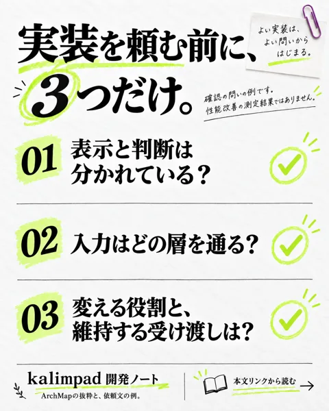
編集デスクのチェックリスト
実装を頼む前に、3つだけ。
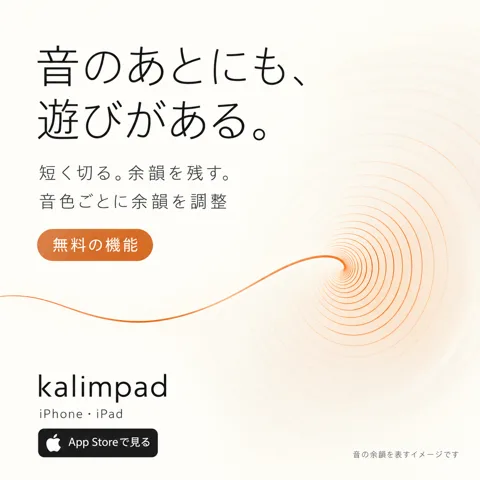
余白の広い抽象音響ポスター
音のあとにも、遊びがある。
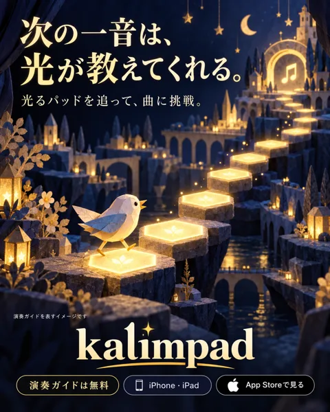
舞台照明を使った幻想的な絵本広告
次の一音は、光が教えてくれる。
秋の旅行雑誌風イラスト
電波はなくても、音はある。
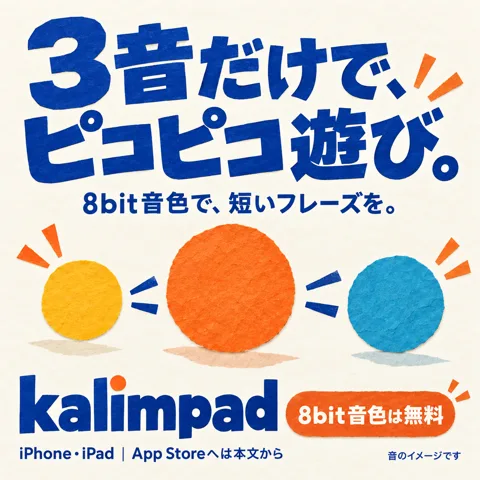
紙工作コラージュ
8bit音色
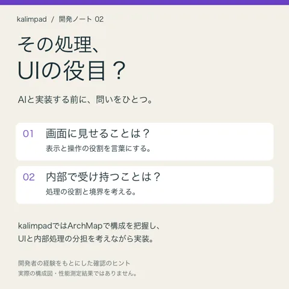
実装前のチェックカード
開発者のArchMap活用経験
情緒的な雑誌広告
11音色
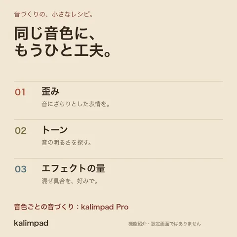
紙のレシピ風タイポグラフィ
音色ごとの音づくり
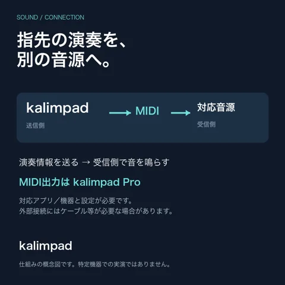
暗色の信号フロー図
MIDI出力
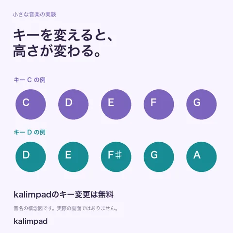
明るい音名の比較図
キー変更
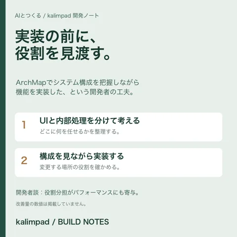
開発ノート風エディトリアル
システム構成の把握
雑誌風フォトコラージュ
写真背景
温かい四コマ漫画
広告・アカウント登録不要
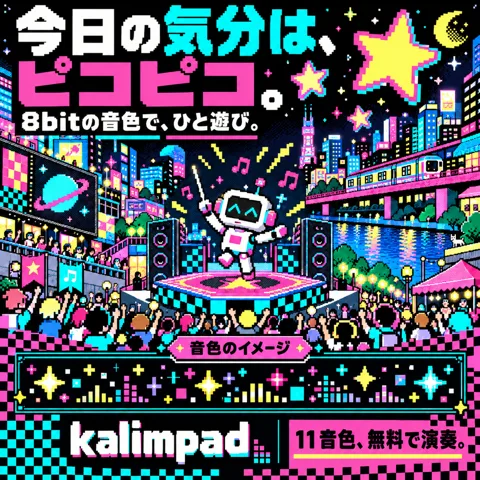
ピクセルアート
8bit音色
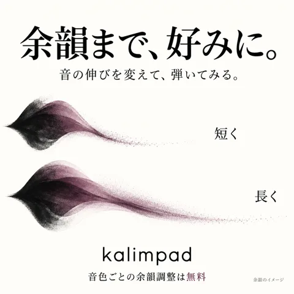
余白のある抽象図解
音色ごとの余韻調整
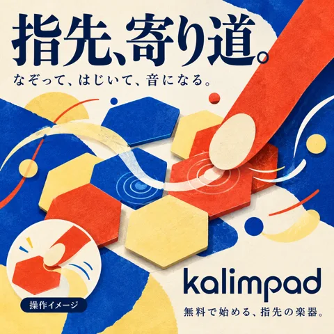
切り絵コラージュ
なぞる・はじく操作
シックな夜の人物広告
オルゴール音色
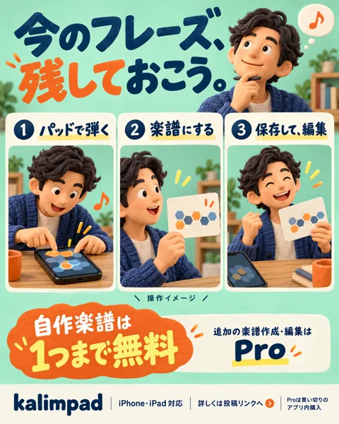
粘土人形風のコミカルな3コマ
自作楽譜の作成・保存・編集
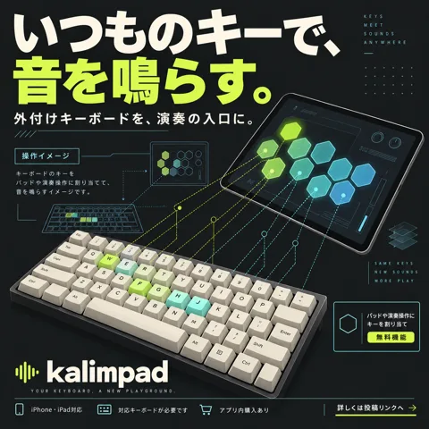
工業デザイン風の概念図
外付けコンピューターキーボードのキー割当
夜の音楽室を思わせる横長広告
iPad横画面の左右別音色・音域
温かい人物イラスト
演奏ガイド
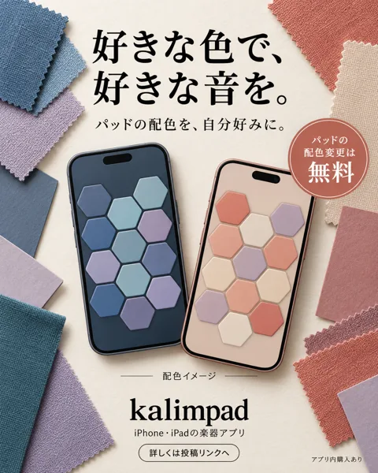
布見本を使う雑誌広告
パッド配色変更
人物主役の映画ポスター・ファッション広告
11音色の選択
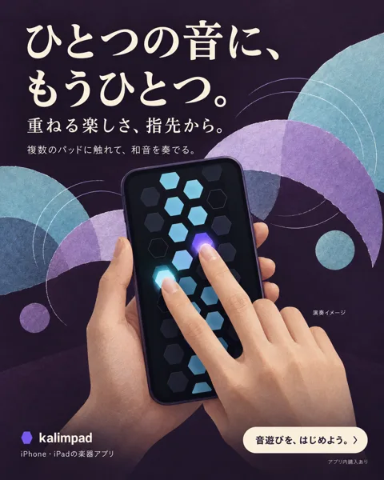
紙のコラージュとレコードジャケット風広告
複数パッドで和音を演奏
旅の情景を描くエディトリアル広告
オフライン演奏
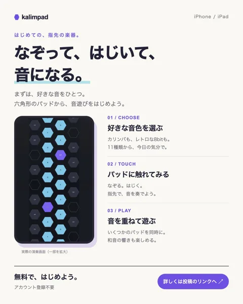
演奏ガイド
なぞって、はじいて、音になる。
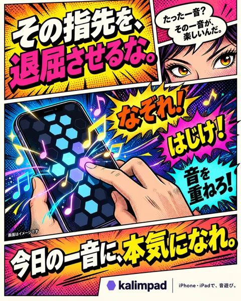
アメコミ